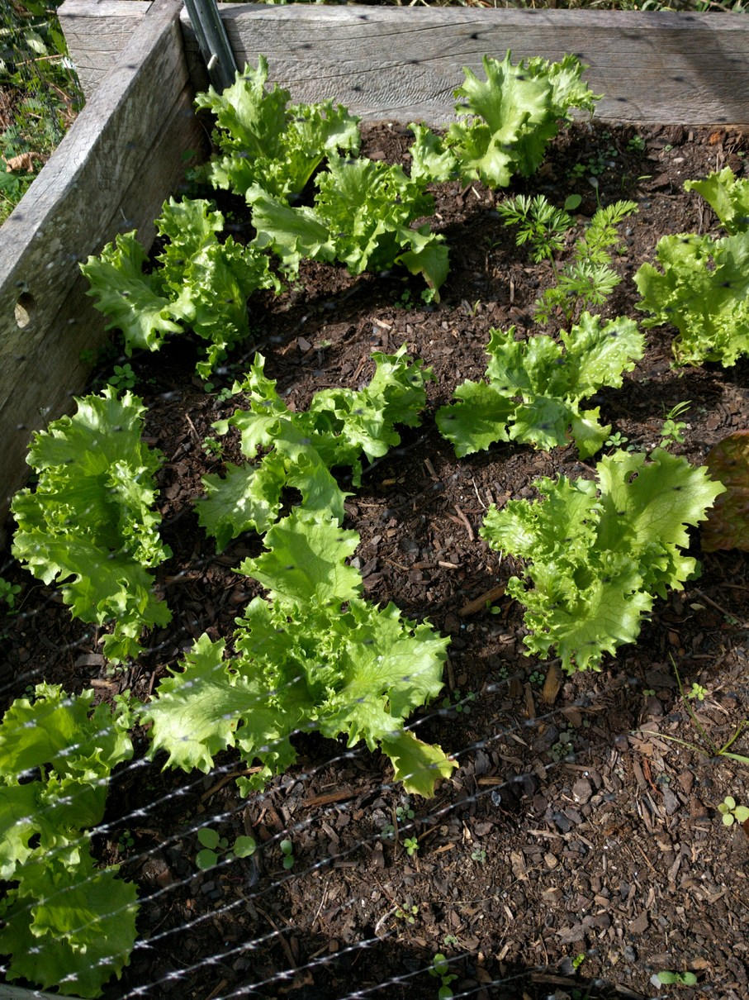

Full Sun, Mature in 85 Days
Features: A Summer lettuce type that's also very productive in cool weather.
Care: Plant in fertile, well-drained soil, spacing plants 30cm (12") apart with 60cm (18-24") between rows. Provide ample moisture, fertiliser and mulch for best yield.
